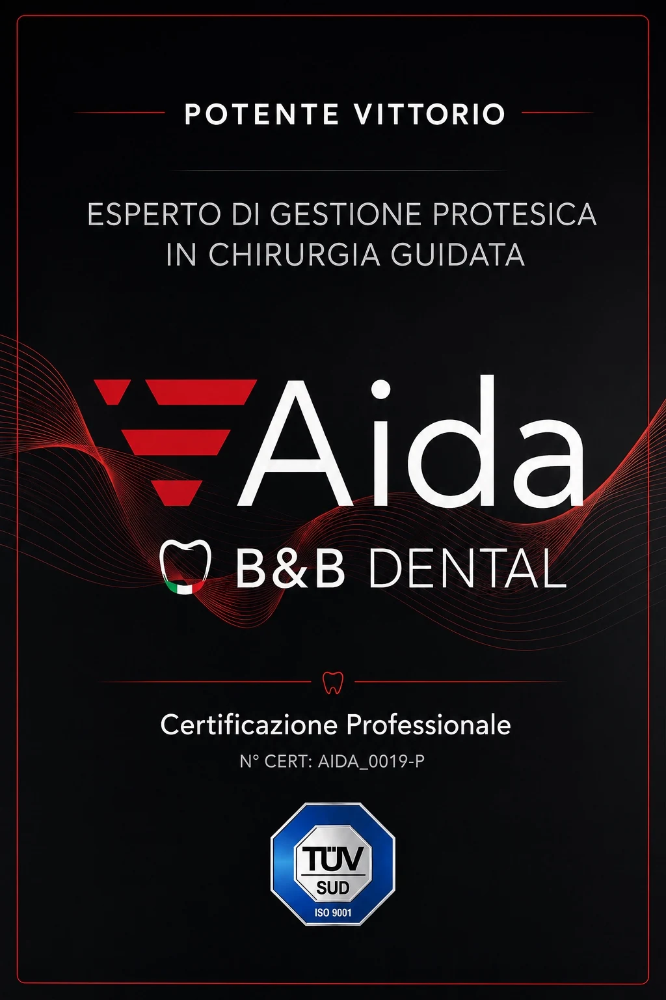

Qualità e competenze
Gestione protesica in chirurgia guidata.
Competenze dedicate alla pianificazione digitale e alla gestione protesica dei casi di chirurgia guidata.

Certificazione professionale
Esperto di gestione protesica in chirurgia guidata.
Certificazione professionale AIDA B&B Dental dedicata alla gestione protesica in chirurgia guidata.
- Pianificazione digitale del caso
- Gestione del flusso protesico
- Dime e componenti personalizzati
- Integrazione tra progettazione e finalizzazione
Applicazione pratica
Lavori realizzati grazie alla certificazione.
I seguenti casi mostrano l’applicazione concreta delle competenze acquisite con la certificazione professionale nella gestione protesica in chirurgia guidata, dalla progettazione digitale alla finalizzazione del lavoro.